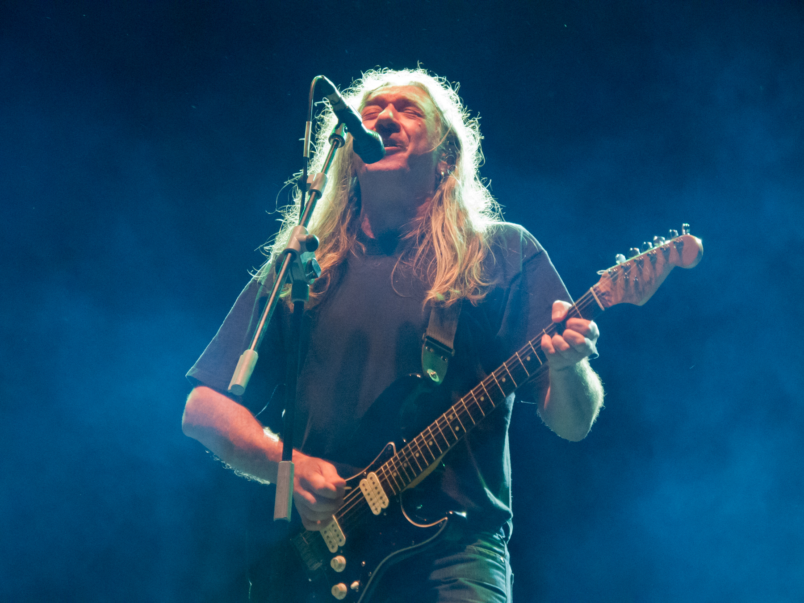

Gira “Mi tiempo, señorías…” (2018)
Conciertos en imágenes



La gira de despedida
En 2018 Rosendo anunció su retirada de los escenarios con la gira “Mi tiempo, señorías…”. Durante meses recorrió todo el país repasando canciones de Leño y de su extensa carrera en solitario.
Entre las paradas más especiales se encuentran los conciertos de Madrid (WiZink Center) y Barcelona (Sant Jordi Club), que se recogen con más detalle en esta web.
Conciertos destacados
Legado
Aunque la gira supuso el final de su actividad en directo, el legado de Rosendo sigue muy vivo. Sus discos continúan editándose y nuevas generaciones descubren sus canciones gracias a plataformas digitales y al boca a boca de siempre.
Frase de cierre
“Ya no más, dejo de subirme al escenario. Pero la música sigue dentro.” — Rosendo Mercado